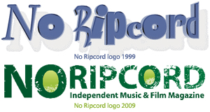

The News, Digested (16.03.2009)
NO RIPCORD CELEBRATES 10TH BIRTHDAY NEXT MONTH!
By David Coleman
In April 1999, three Cumbrian students launched an embarrassingly basic music website called No Ripcord. Against the odds, the site has survived for ten years, growing into one of the most respected sources of music criticism on the Internet. Or something like that.
We’re immensely proud of No Ripcord’s longevity and its continuing growth and, to celebrate this important milestone, we'll be posting a series of special feature articles next month.
If you’ve been with us since the early days and would like to chip in with any comments, we’d love to hear from you. Please use this contact form to get in touch!
. . .
SXSW, DIGESTED!
By David Coleman
I really wish this edition of the No Ripcord news digest could be a SXSW special. Every year I keep promising myself I’ll take the necessary time off work to attend this vital event in the industry calendar. And every year, when March rolls around, I realise I’ve either left it too late or blown all my annual leave. Being based in Sheffield doesn’t help either.
Fortunately, a nice chap by the name of Ben Stolt has a solution for those of us wishing we were in Austin. He’s grouped all of the free MP3s available on the festival’s site into three (admittedly very large) torrent files, which can be downloaded here. It’s all 100% legal and it seems like a great way to a) utilise all of that free space on your 120GB iPod and b) check out a massive number of exciting new bands with minimal effort.
I recommend you get them while they’re still warm, so to speak.
. . .
YOUTUBE BLOCKS VIDEOS IN UK
By Miguel Morelli
YouTube is blocking access to all premium music videos in the UK, after failing to reach a licensing deal with the Performing Rights Society (PRS). With the PRS demanding too much for YouTube’s liking, the lack of an agreement is turning into hefty punishment for consumers.
Patrick Walker, YouTube’s director of video partnerships, said that the price is too steep, and that the company “cannot be expected to engage in a business in which it loses money every time a music video is played,” thus claiming that YouTube doesn’t have the means to meet the PRS’s demands.
Feargal Sharkey, head of industry body UK Music, accused Google/YouTube of blocking the videos in order to force the PRS to lower its price, calling it a "blatant, cynical, manipulative" negotiating tactic. YouTube said that talks with the PRS were ongoing, and hoped to reach an agreement soon. In the meantime, the site has started blocking videos since last week and plans to eventually obstruct users from viewing the entire catalogue of premium videos.
UK artists are worse off, because users can access most of the blocked content on other web sites and streaming services. Since Google seems happy to let UK consumers down, it’s only a matter of time before the PRS must lower their fees, despite their accusations. Who is in the right, the PRS and its expensive royalty fees, or YouTube and its lack of money? [BBC]
. . .
VODAFONE DROPS MOBILE MUSIC RESTRICTIONS IN THE UK
By Miguel Morelli
Vodafone has signed a deal with three of the UK's biggest record labels in order to give customers music on their mobile phones without Digital Rights Management (DRM) software.
The deals with Universal Music Group, Sony BMG and EMI will enable Vodafone to sell music that doesn’t prevent users from transferring songs between different devices, an annoyance DRM happily provided beforehand. Vodafone also confirmed that an agreement with Warner Music Group is in the works, which would make their conquest of the four major labels complete.
Songs without DRM is supposed to encourage consumers to buy more music on their mobile phones, and Nokia is doing the same with their new service Comes With Music. However, as music sales decline and music becomes increasingly downloadable for free online, we have to wonder whether the move will make much of a difference to the average consumer’s behaviour. [PCWorld]
. . .
THE BRITISH MUSIC EXPERIENCE ROCK MUSEUM
By Miguel Morelli
The British Music Experience (BME) opened at the O2 in south-east London last Monday, a museum dedicated to British rock. The non-profit educational centre looks to banish the bad impressions of its predecessors like the Sheffield National Centre for Popular Music and the Rock Circus with new technology, like online access to your favourite bits of the museum.
Adults still have to pay a £15 entrance fee, and the museum hopes to achieve 350,000 visitors a year, so being classified as “non-profit” may be a stretch. But the biggest draw is the addition of some of the latest technology to the exhibits. Each exhibit comes with headphone commentary, with available tracks for listening, and filmed interviews featured on screens.
Certain rooms are dedicated to historical periods, and with the help of a mouse ball, you can learn more by highlighting the items that interest you on huge screens. There’s a room dedicated to Gibson guitars, and you can play the instruments, including pianos and drums. It’s also possible to play along with your favourite artist’s music videos.
Perhaps the most important advancement in museum technology is the “smart” ticket, which is used to interact with the exhibits. Each exhibit you engage gets registered on the ticket automatically, which includes text and music. When you get home, you can access the information online, on your own personal MyBME account, and see the parts you liked about the museum. That’s pretty cool. Let’s hope this kind of thing becomes mandatory for all museums, and then maybe the battle against the friction of our chairs could be won. Check out the BME! [TimesOnline]
16 March, 2009 - 20:47 — No Ripcord Staff